Na imagem, está representada uma pequena amostra da diversidade de insetos presentes no planeta Terra. De que maneira a evolução biológica se relaciona com essa biodiversidade?
Se a evolução é um processo relativamente lento, como ela pode ser estudada?
Objetivos da unidade
reconhecer os diferentes pensamentos evolucionistas e suas principais considerações;
compreender os processos de formação de novas espécies;
relacionar o processo evolutivo às características adaptativas de cada espécie;
identificar as principais evidências do processo evolutivo, relacionando-o com a biodiversidade;
relacionar os aspectos de genética populacional com o processo evolutivo.
Pensamento evolucionista
Até o início do século XIX, predominava uma visão de mundo denominada fixismo, em que as espécies se mantinham imutáveis. Nessa perspectiva, elas poderiam apresentar semelhanças, porém não teriam relações de parentesco
entre si.
Contudo, uma revolução científica decorrente dos avanços nas áreas da Ciência e da Geologia, ocorridos no século XVIII e propagados no século XIX, possibilitou a disseminação de outro pensamento, o qual considerava que os seres vivos
se modificavam ao longo do tempo, adaptando-se de forma contínua e dinâmica ao ambiente.
Esse novo pensamento, que posteriormente foi denominado pensamento evolutivo, disseminou-se a partir de 1760, com o trabalho do naturalista francês Conde George-Louis Leclerc de Buffon (1707-1788), que apresentava a
ideia da ocorrência de um processo de transformação (transformismo). Em suas observações, Buffon chegou à conclusão de que os ossos dos membros dos mamíferos apresentavam grande semelhança em diversos aspectos, mesmo esses seres vivendo
em ambientes distintos. Assim, suas hipóteses já faziam referência à existência de transformações, que, segundo ele, aconteciam por meio da transmissão de características que se modificavam durante a existência do indivíduo. No entanto,
ele não explicou como essas modificações aconteciam.
Em 1794, o naturalista Erasmus Darwin (1731-1802) publicou um longo tratado, intitulado Zoonomia, no qual afirmava que existia a possibilidade de transformação dos seres vivos, porém ele também não apresentou uma hipótese para explicar
como esse processo ocorria. Posteriormente, as ideias transformistas foram complementadas por cientistas que sugeriram explicações para as modificações das espécies ao longo do tempo. Entre
esses cientistas, destacam-se Lamarck e Charles Darwin.
As espécies estão em constante processo de evolução. Por isso, o conhecimento a respeito da vida na Terra está constantemente se alterando ao considerar novas ideias, pesquisas e constatações.
Teoria de Lamarck
Em 1809, Jean-Baptiste Pierre Antoine de Monet, Cavaleiro de Lamarck (1744-1829), um professor de Zoologia da França, publicou a obra Philosophie zoologique (Filosofia zoológica), que tratava das modificações que aconteciam
com os seres vivos. Lamarck é considerado o primeiro evolucionista, pois construiu uma teoria ampla sobre a transformação dos seres vivos, cujo propósito era promover uma unificação dos estudos relacionados à vida. Ele propôs o termo
biologia para essa nova área de estudos.
A compreensão dos processos evolutivos possibilita estabelecer relações entre as diversas áreas da Biologia, como Botânica, Zoologia, Taxonomia, Biologia Celular, Ecologia e Genética. Sem o entendimento de como
ocorre a evolução das espécies, essas áreas se tornariam um conjunto de informações isoladas.
Diante do período histórico em que estava inserido e dos conhecimentos científicos da época, Lamarck defendia que os seres vivos se desenvolviam gradativamente ao longo das gerações, de maneira linear, adquirindo formas cada vez mais
complexas, que resultariam em espécies com estruturas corporais mais complexas. Com isso, quanto mais complexo fosse um ser vivo, mais antigo ele era, pois maior era o tempo que ele vinha se desenvolvendo a partir de um organismo
primitivo.
Para Lamarck, o desenvolvimento dos seres vivos somente poderia ser perturbado pela ação das condições existentes no ambiente, como clima, temperatura e altitude, que atuavam na transformação dos indivíduos para garantir sua
sobrevivência. Assim, uma alteração no ambiente exigiria o aumento ou a diminuição do uso de certas partes do corpo. Na teoria de Lamarck, isso significava que, quanto mais um órgão ou estrutura corporal fosse usado, maior seria seu
desenvolvimento. As partes que não eram utilizadas atrofiavam-se ou desapareciam com o tempo – lei do uso e desuso.
Portanto, de acordo com Lamarck, o uso e o desuso dos órgãos explicavam a diversidade de espécies e gêneros de seres vivos, considerando que as alterações sofridas pelos indivíduos durante sua vida seriam transmitidas aos descendentes
– lei da herança dos caracteres adquiridos.
Observe, a seguir, alguns exemplos que facilitam a compreensão das explicações de Lamarck para determinadas características.
Os ancestrais das serpentes teriam tido pernas, que, em determinado momento, passaram a atrapalhar o deslocamento do animal em lugares apertados. Com o desuso, as pernas foram se atrofiando e desapareceram completamente. Assim, o
corpo das serpentes passou a não mais apresentar apêndices locomotores.
Os anfíbios teriam se originado de peixes que precisavam encontrar alimentos e respirar em ambiente terrestre. Por isso, desenvolveram pernas e pulmões.
As aves aquáticas, como os flamingos, teriam adquirido a característica de pernaltas em virtude do esforço em esticar as pernas para buscar alimento na água sem molhar suas penas.
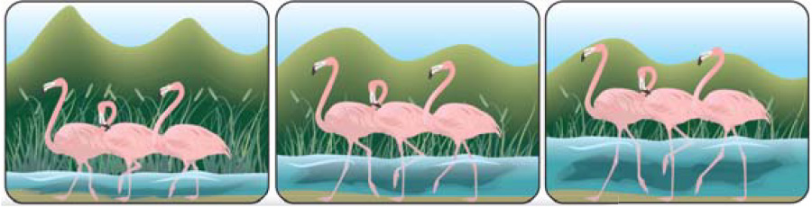
Jack Art. 2013. Digital.
Representação esquemática da explicação lamarckista para o desenvolvimento das pernas altas dos flamingos de acordo com o aumento gradativo do nível da água
Com a identificação de que as alterações corporais ocasionadas pelo uso e desuso não são hereditárias e por sugerir que as espécies não apresentam grau de parentesco entre si, a Teoria de Lamarck não estava completa. No entanto, seus
estudos foram importantes e são citados, inclusive, por Charles Darwin, por ser um dos primeiros a destacar as adaptações dos seres vivos ao ambiente e que estas ocorriam de forma gradual.
Teoria de Darwin
Charles Robert Darwin (1809-1882) foi um naturalista inglês, neto de Erasmus Darwin e filho do médico e consultor financeiro Robert Darwin. Para se dedicar aos estudos, deixou sua cidade natal, Shrewsbury, na Inglaterra, com 16 anos
para estudar Medicina na Escócia. Logo abandonou os estudos na área médica e foi estudar para se tornar um sacerdote anglicano, em Cambridge. Entretanto, a vida religiosa não o agradou, pois seu interesse era a História Natural.
Em Cambridge, Darwin foi aluno do professor de Botânica e reverendo John Henslow. Em 1831, Henslow apresentou Darwin ao professor de Geologia Adam Sedgwick, um dos mais respeitados geólogos da Inglaterra, que o convidou para realizar
uma expedição geológica pelo País de Gales. A partir daí, Darwin tornou-se um observador da natureza, e os estudos geológicos lhe possibilitaram adquirir amplo conhecimento sobre os fósseis e as modificações pelas quais a Terra tinha
passado.
A expedição tinha o objetivo de atualizar velhos mapas e fazer um levantamento completo de regiões pouco conhecidas, incluindo a costa da América do Sul. Além disso, deveriam ser realizadas a descrição de diversas formas de vida e a
verificação dos recursos dessas regiões em virtude do interesse dos ingleses por sua exploração e comércio. Assim, no dia 27 de dezembro de 1831, o Beagle partiu da Inglaterra; em fevereiro de 1832, chegou a Salvador e, em abril do
mesmo ano, ao Rio de Janeiro.
Observe, no mapa, o percurso da viagem do navio Beagle, a qual durou cinco anos.
Em março de 1835, o navio atingiu o Oceano Pacífico, chegando a Valparaíso, no Chile, onde Darwin fez diversas observações geológicas na Cordilheira dos Andes. Em setembro de 1835, a expedição chegou ao Arquipélago de
Galápagos (galápago significa “jabuti”, em espanhol), situado 1 000 km a oeste da costa do Equador.
Em Galápagos, Darwin verificou a existência de diferentes espécies de árvores, jabutis gigantes e aves. Ele ficou impressionado com as variedades e adaptações dos pássaros tentilhões nas diversas ilhas do arquipélago. Assim, observou
um grupo de 14 espécies de tentilhões, pertencentes a quatro gêneros, cada uma com um tipo de bico adaptado ao regime alimentar específico da ilha à qual pertencia (sementes, insetos, flores,
cactos, entre outros).
Existem 13 espécies de tentilhões em Galápagos − 14 se for incluído também o tentilhão da Ilha dos Cocos (Pinaroloxias inornata), que é uma espécie relacionada –, e cada uma tem a forma do bico
característica. Darwin concentrou seus estudos na relação entre a forma do bico, o alimento e o hábitat de cada espécie.
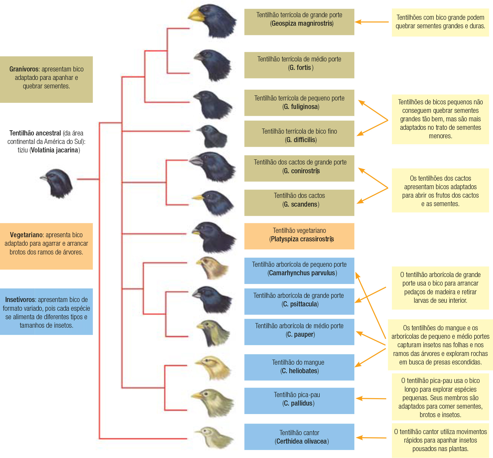
Ricardo Grube. 2011. Digital.
Fonte: PURVES, Willian K. et al. Vida: a ciência da Biologia. 6. ed. Porto Alegre: Artmed, 2005. v. 2, p. 416.
Esquema representativo da irradiação adaptativa das espécies de tentilhões (da Família Fringillidae) observadas por Darwin no Arquipélago de Galápagos (tamanho aproximado dos tentilhões: 15 cm de comprimento)
Após cinco anos de expedição no navio Beagle, Darwin regressou com muitas anotações e dados que precisavam ser estudados. Além disso, ele entrou em contato com obras que tratavam do pensamento evolucionista.
Com todas as observações que realizou das espécies animais e vegetais, geológicas e fósseis, Darwin passou a desenvolver alguns métodos para a verificação de mecanismos que provocam a transformação das espécies. Assim, traduziu sua
compreensão da adaptação dos tentilhões e concluiu que, quando um ser está mais adaptado ao ambiente, suas chances de sobrevivência são maiores e seres menos adaptados têm menos chances de sobreviver. Esse processo denomina-se
seleção natural. Resumindo nas próprias palavras de Darwin, “as espécies, ao contrário da crença quase universal, não são estáticas e imutáveis, mas se modificam através de longos períodos de tempo, pela seleção
natural, permanecendo vivo o mais apto”.
Somente após 22 anos de seu retorno e cerca de 50 anos depois da publicação do livro de Lamarck, já sabendo do trabalho desenvolvido pelo naturalista Alfred R. Wallace (1823-1913), Darwin publicou seu livro A origem das espécies:
por meio da seleção natural (The origin of species by means of natural selection), em 24 de novembro de 1859.
A ideia de ancestralidade foi defendida por Lamarck, que a imaginava como uma sequência linear. Darwin, entretanto, inovou por conceber a ideia de ancestralidade como uma árvore, com inúmeras ramificações, na qual duas espécies
semelhantes seriam descendentes de uma única espécie existente no passado, sua ancestral. Para ele, a grande diversidade de vida na Terra é o resultado de mecanismos que atuam durante milhões de anos e continuam atuando nos dias atuais.
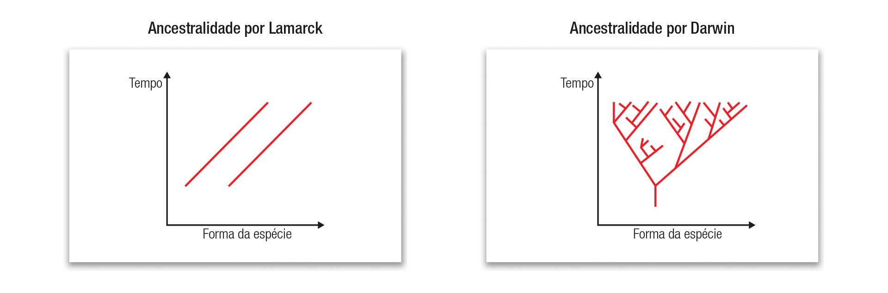
Fonte: RIDLEY, Mark. Evolução. 3. ed. Porto Alegre: Artmed, 2006. p. 32.
O pensamento evolucionista possibilita explicar como as espécies existentes descendem de outras que já habitaram a Terra e por quais modificações elas passaram. Entretanto, quando Darwin publicou seu trabalho, ainda não se tinham
conhecimentos sobre a estrutura dos cromossomos, dos genes e de seus modos de expressão, que foram detalhados mais tarde, o que tornava mais difícil a tarefa de explicar de maneira satisfatória as características das espécies e o
processo evolutivo.
Conexões
Darwin e Wallace
Ao mesmo tempo que Darwin desenvolvia ideias a respeito da seleção natural e da evolução, outro naturalista também escrevia sobre o mesmo tema: o britânico Alfred Russel Wallace, o qual realizou duas grandes viagens – uma para a
Amazônia, onde permaneceu por 11 anos, e outra para a Ásia. Wallace escreveu o ensaio “Sobre a tendência das variedades de se distanciar indefinidamente a partir do tipo original” e o enviou a Darwin, a quem admirava, para críticas e
sugestões.
Pela semelhança de seus trabalhos e com receio de ter a originalidade de suas ideias ameaçada, Darwin escreveu ao amigo e renomado geólogo Charles Lyell. Em virtude da influência de Lyell no meio científico, os trabalhos de Darwin e
Wallace foram apresentados ao mesmo tempo, no dia 1.º de julho de 1858, a Linnean Society of London, considerado o mais importante centro de estudos de História Natural da Inglaterra. Depois disso, Darwin publicou seu livro A origem
das espécies.
Não se sabe ao certo por que o nome de Wallace foi obscurecido por Darwin. Admite-se, porém, que isso se deve ao fato de Darwin já ser um naturalista bastante renomado na época. Contudo, Wallace foi o primeiro a propor um mapa
geográfico das espécies animais e, por isso, é considerado o pai da Biogeografia.
Organize as ideias
O pensamento evolutivo foi sendo elaborado cientificamente no decorrer do tempo. Monte um esquema ou quadro elencando os principais pontos do pensamento evolutivo em cada período estudado: Erasmus Darwin, Lamarck e Charles Darwin
Atividades
(UNESP)
Aquecimento já provoca mudança em gene animal. Algumas espécies animais estão se modificando geneticamente para se adaptar às rápidas mudanças climáticas no espaço de apenas algumas gerações, afirmam cientistas.
Folha de S.Paulo, 09.05.2006.
O texto pressupõe uma interpretação darwinista ou lamarckista do processo evolutivo? Justifique.
(UPF – RS) Segundo Lamarck, todo ser vivo atual surgiu em decorrência de transformações sucessivas de uma forma primitiva originada por geração espontânea a partir de matéria não viva, e o crescimento ou a atrofia de determinados
órgãos nos indivíduos depende de seu uso ou desuso. Por outro lado, Darwin afirmava que todo ser vivo, em algum ponto do passado, compartilha um ancestral comum. Essas afirmações estão:
a) totalmente erradas, pois os autores das ideias estão invertidos.
b) parcialmente corretas, pois quem criou a lei do uso e desuso foi Darwin.
c) parcialmente corretas, pois Darwin nunca afirmou que os seres vivos têm ancestrais comuns.
d) parcialmente corretas, pois as ideias de geração espontânea e da lei de uso e desuso são do criacionismo.
e) totalmente corretas, segundo a História.
Estudos geológicos, de fósseis e das alterações do relevo são apontados como uma importante contribuição para o desenvolvimento do pensamento evolutivo de Wallace e Darwin. Considerando que a Terra tem, aproximadamente, 4,6 bilhões
de anos, qual seria a importância dessa informação para o desenvolvimento das teorias evolucionistas?
(UNIMONTES – MG) A evolução pode ser entendida como sendo o processo de variação e adaptação de populações ao longo do tempo, podendo, inclusive, provocar o surgimento de novas espécies a partir de uma preexistente. O quadro a
seguir apresenta características de algumas teorias evolutivas. Analise-o.
Lamarckismo
Darwinismo
I
Ambiente
Motor da evolução
Motor da evolução
Motor da evol
Variabilidade
II
Intraespecífica
III
Mecanismo de evolução
IV
V
Mudança no fundo genético das populações
VI
Lei da herança dos caracteres adquiridos
Reprodução diferencial
Reprodução diferenciada (a informação genética é transmitida aos seus descendentes)
De acordo com o quadro e o assunto abordado, analise as alternativas abaixo e assinale a correspondente ao VI.
a) Transmissão de características.
b) Lei do uso e desuso.
c) Mutações e recombinações genéticas.
d) Seleção natural.
Seleção natural e adaptação
A Teoria da Evolução das Espécies pela Seleção Natural, também chamada de darwinismo, que teve a grande contribuição de Alfred Russel Wallace, contém alguns princípios fundamentais, tais como:
todos os organismos sofreram uma diversificação (irradiação) adaptativa, ou seja, descenderam de um ancestral comum, que passou por diversas modificações;
deve haver diversidade entre os indivíduos de determinada população;
o mecanismo que atua sobre a variação individual denomina-se seleção natural. Esse mecanismo evolutivo favorece os mais bem adaptados ao ambiente, possibilitando a sobrevivência. Desse modo, os indivíduos da
população que apresentam variações favoráveis conseguem se alimentar e se reproduzir, deixando descendentes.
O conceito biológico de adaptação está relacionado às características dos seres vivos que favorecem sua sobrevivência em determinado ambiente. Essas características podem ser fisiológicas, anatômicas, morfológicas,
entre outras, e sua passagem aos descendentes é influenciada pela seleção natural. Contudo, como o ambiente está em constante mudança, essas adaptações podem repentinamente se tornar desvantajosas. Assim, os organismos
estão em constante seleção.
Teoria Sintética da Evolução
Apesar de muito bem fundamentada, a Teoria da Evolução não explicou como acontecem as modificações nos seres vivos, pois ainda não se conhecia a estrutura do material hereditário (DNA).
Assim, a partir da década de 1920, o darwinismo ganhou o reforço dos estudos de Mendel e da Genética, consolidando uma nova teoria evolutiva, denominada Teoria Sintética da Evolução, também chamada de neodarwinismo.
Nessa concepção, as mutações e as recombinações genéticas, além da seleção natural, da migração e da deriva genética, são as principais responsáveis pelas variações entre os indivíduos, determinantes no processo de evolução das
espécies.
De acordo com o neodarwinismo, as mutações são o principal fator evolutivo, pois possibilitam a formação de novas características nas populações. As recombinações gênicas, mecanismos que ocorrem
durante a meiose (crossing-over e segregação independente), possibilitam que novas combinações alélicas sejam formadas e se distribuam entre os seres vivos. As migrações também atuam na evolução das espécies ao
proporcionar fluxo gênico entre diferentes populações.
A deriva genética ou oscilação genética, modificação das frequências alélicas e genotípicas que ocorre aleatoriamente, também é considerada um mecanismo evolutivo. Fatores climáticos, predação diferencial intensa e
casamentos consanguíneos (endogâmicos) podem aumentar ou diminuir a frequência de um alelo existente na população. Com isso, ocorre a diminuição da variabilidade genética populacional. Exemplificando, em uma enchente, podem ser
eliminados aleatoriamente muitos indivíduos de uma população, e os que sobrevivem não são necessariamente os mais adaptados.
De acordo com sua ação, os principais fatores relacionados à evolução das espécies são reunidos em duas categorias: os que aumentam a variabilidade genética e os que atuam sobre ela. Os fatores que aumentam a variabilidade
genética (mutação e recombinação gênica) possibilitam a existência de variações fenotípicas que favorecem o surgimento de mais características. Já os fatores que atuam sobre a variabilidade genética (seleção
natural, migrações e deriva genética) agem na evolução, alterando as frequências gênicas (alélicas) das populações.
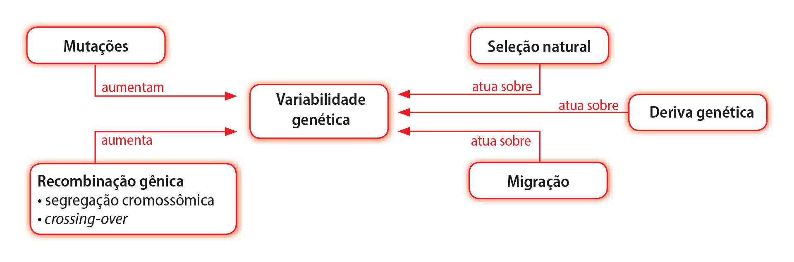
Os atributos que favorecem a sobrevivência e a capacidade de reprodução são chamados de adaptativos. Essas características tendem a ser transmitidas para os descendentes, ou seja, são herdáveis. Portanto, para Darwin,
a modificação evolutiva é o resultado da atuação da seleção natural sobre a variabilidade de uma população.
Existem inúmeras discussões e polêmicas referentes ao nível biológico no qual a seleção natural atua: dos indivíduos, dos genes ou das populações. O foco da ação da seleção natural ainda é discutido, mas atualmente
há um consenso maior de que ela pode atuar em cada um dos diferentes níveis da organização biológica. No entanto, não há resposta sobre seu impacto em cada um desses níveis nem a respeito de como esses fenômenos se relacionam.
Suponha que certa espécie de pássaro passe a apresentar um gene mutante que lhe possibilite uma forma de bico diferente, o qual captura melhor determinados insetos. Esse pássaro transmite esse gene aos descendentes e, assim, a
população passa a apresentar a característica favorável em relação ao hábito alimentar. Com o tempo, a frequência desse gene tende a aumentar em razão da seleção natural.
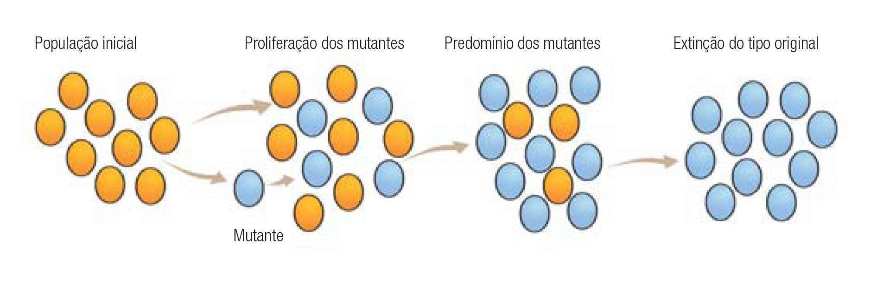
Dagoberto Pereira. 2011. Digital.
A seleção natural atua sobre a variação favorável mantendo o indivíduo que apresenta essa modificação (em azul).
Vários outros exemplos de atuação da seleção natural podem ser mencionados, entre eles, os casos dos insetos resistentes a inseticidas; dos animais que conseguem se camuflar, escondendo-se dos predadores ou das presas; e das plantas
que apresentam a capacidade de retenção de água, conseguindo sobreviver em ambientes secos.
Animais camuflados não são vistos pelos predadores ou pelas presas, e plantas com capacidade de retenção de ar sobrevivendo em ambientes aquáticos são exemplos da atuação da seleção natural.
É importante ressaltar que não é o ambiente que provoca a modificação, ou seja, os seres vivos não apresentam variações em virtude da necessidade de adaptação e sobrevivência ou porque precisam se aperfeiçoar. As novas
características geradas pelas mutações surgem espontaneamente, podendo ser vantajosas ou não. Os portadores das características vantajosas são selecionados pelo ambiente e, por isso, conseguem sobreviver por mais
tempo, deixando descendentes com seu patrimônio genético. Portanto, o ambiente não modifica, apenas seleciona os mais adaptados. Isso é seleção natural.
Conexões
A teoria de Darwin foi bastante inspirada nas ideias de Thomas Malthus (1766-1834), que fez importantes estudos sobre o crescimento de populações humanas. Para Malthus, enquanto as populações crescem em progressão geométrica, a
produção de alimentos cresce em progressão aritmética. Ao ler os trabalhos de Malthus, Darwin pensou na luta pela sobrevivência. Contudo, o que o intrigou foi o fato de que as populações crescem até certo ponto e, depois, se mantêm
estáveis, pois há competição por alimento e espaço. Essa conclusão foi central para o desenvolvimento da ideia da seleção natural, publicada mais de 50 anos depois dos originais de Malthus.
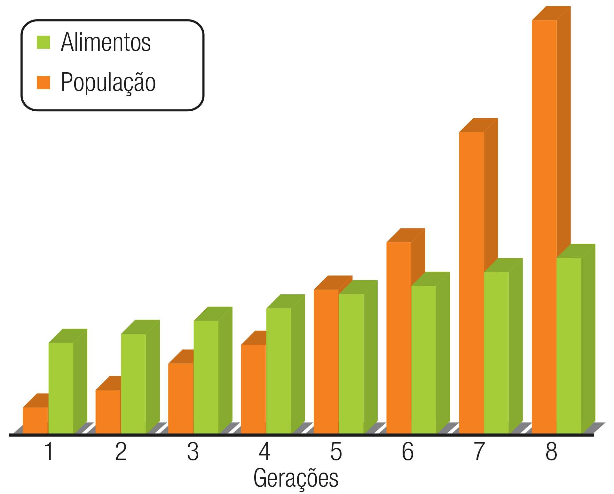
Os estudos de Malthus mostraram que o crescimento das populações é proporcionalmente maior que o crescimento dos recursos alimentares.
Seleção natural
Atualmente, estudos sugerem três tipos de seleção natural: direcional, estabilizadora e disruptiva.
Seleção natural direcional
É aquela em que um fenótipo extremo é favorecido e tende a aumentar sua frequência na população. Em determinada população de tainhas, por exemplo, os indivíduos menores conseguem sobreviver porque a pesca é realizada com técnicas que
capturam os exemplares maiores e possibilitam a fuga dos menores. Esse processo faz com que ocorra uma diminuição na média de tamanho entre os membros dessa população, pois os indivíduos menores passam a ter mais chances de
sobrevivência. Esse tipo de seleção também pode atuar sobre os indivíduos grandes, dependendo da pressão do ambiente.
A resistência das bactérias aos antibióticos e a dos insetos aos inseticidas também são exemplos de seleção natural direcional.
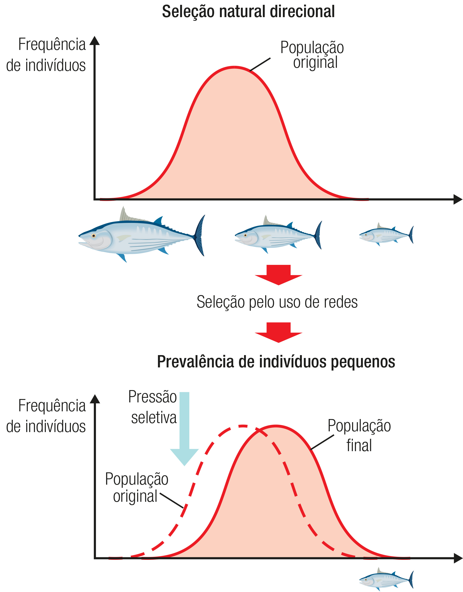
Ilustrações: Jack Art. 2013. Digital.
Representação gráfica da seleção natural direcional e seus efeitos sobre a distribuição dos fenótipos na população de peixes
Seleção natural estabilizadora
Ocorre em populações que habitam locais relativamente estáveis, onde a média dos organismos está regulada e, por isso, os indivíduos portadores de características intermediárias são favorecidos (fenótipo intermediário), diminuindo
aqueles que apresentam características extremas.
Um exemplo de seleção estabilizadora pode ser observado em populações de determinados pássaros, como os pardais, com base na análise do tamanho das asas dos animais mortos depois de uma forte tempestade. Entre os indivíduos mortos, a
maioria apresenta asas muito longas ou muito curtas em relação aos intermediários existentes na população. Assim, as tempestades passaram a atuar como fator seletivo, eliminando mais intensamente os pássaros com asas de tamanhos maiores
e menores, mantendo maior quantidade de pardais com asas de tamanho médio.
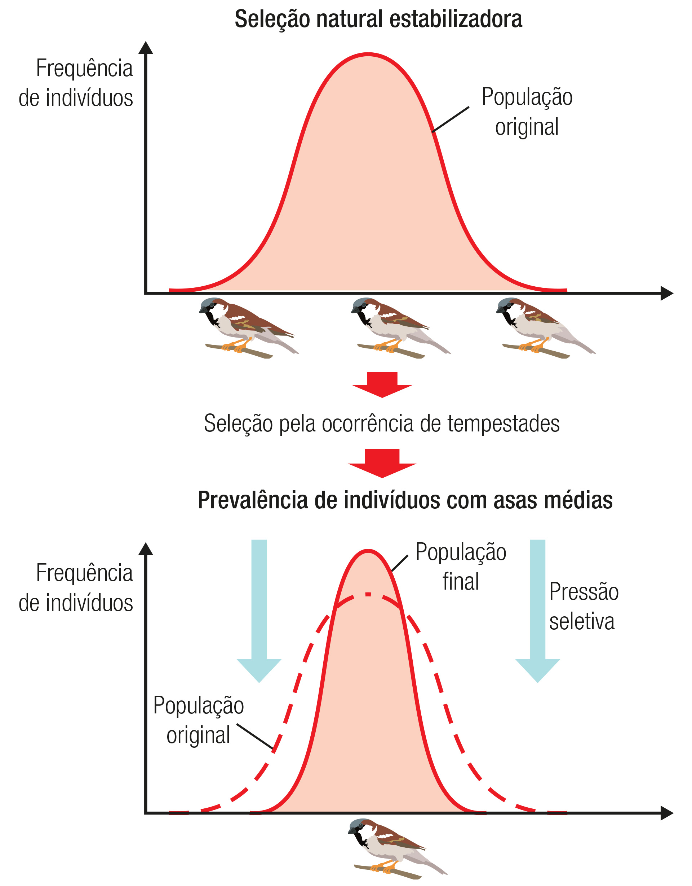
Ilustrações: Jack Art. 2013. Digital.
Representação gráfica da seleção natural estabilizadora e seus efeitos sobre a distribuição dos fenótipos na população de pardais
Seleção natural disruptiva
Também conhecida como seleção diversificadora, ocorre quando os indivíduos extremos são favorecidos na população, ou seja, aqueles que existem em menor quantidade tendem a produzir maior
descendência que os intermediários, que se localizam no centro da distribuição. Isso acaba produzindo dois picos na distribuição em um gráfico.
A seleção disruptiva é de particular interesse teórico, pois pode aumentar a diversidade genética em uma população e possibilitar o fenômeno de especiação. Por isso, também é chamada de seleção
diversificadora.
Como exemplo de seleção disruptiva, podem-se citar as sementes que servem de alimento a besouros, os quais preferem as de tamanho médio, desprezando as de tamanho pequeno ou grande. Com isso, as sementes que apresentam fenótipos
extremos são favorecidas, aumentando o número de plantas que produzem sementes pequenas ou grandes na população.
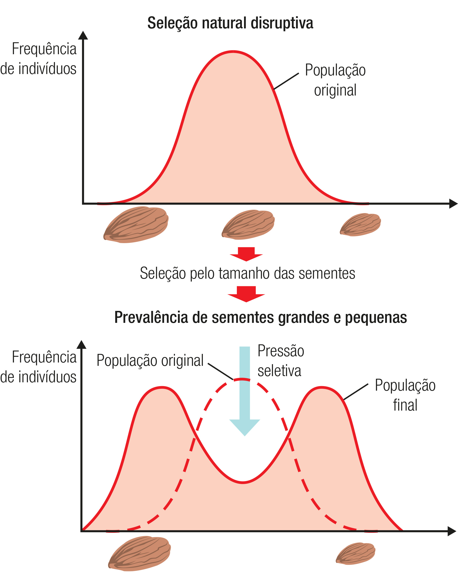
Jack Art. 2013. Digital.
Representação gráfica da seleção natural disruptiva e seus efeitos sobre a distribuição dos fenótipos em sementes
Seleção sexual
Trata-se de uma forma de seleção em que os indivíduos com determinadas características obtêm parceiros mais facilmente. Essas características podem ser ornamentais, comportamentais ou estarem relacionadas ao tamanho dos organismos.
De acordo com o critério de cada espécie, há atrativos nos indivíduos machos que garantem a conquista das fêmeas e, consequentemente, mais chances de reprodução e manutenção dessas características nos descendentes. Entre alguns
exemplos de atrativos, estão a cauda do pavão, o chifre do cervo, o tamanho do pescoço da girafa, o canto dos pássaros e o coaxar dos sapos.
Briga de elefantes-marinhos machos pela posse das fêmeas
Compreende a seleção intencional, geralmente, realizada por criadores de animais e plantas, os quais selecionam indivíduos com base em características desejáveis para a reprodução. Essas características podem ser frutos maiores,
quantidade maior de folhas, maior produção de leite ou lã, entre outras, e as alterações são percebidas em uma escala de tempo muito menor que na seleção natural.
O método de seleção artificial era conhecido por Darwin, que o empregava em sua criação de pombos para a formação de características diferentes entre os indivíduos, como coloração e mais ou menos penas. Animais como porcos, ovelhas,
vacas e cavalos também passaram pelo método de seleção artificial iniciado com espécies selvagens, o que resultou em seu processo de domesticação.
As diferentes raças de cachorros existentes na atualidade se desenvolveram a partir da seleção artificial feita com lobos. As características como peso, altura, pelagem, docilidade e inteligência puderam ser escolhidas no momento de
realizar os cruzamentos, resultando nas inúmeras raças atuais.
A seleção artificial de cachorros originou inúmeras raças.
No caso das plantas, os vegetais que compõem a base da alimentação humana atualmente, como milho, soja, trigo, arroz e feijão, passaram pelo processo de seleção artificial. Nesses casos, os agricultores escolhiam as plantas com frutos
ou grãos maiores e mais saborosos, realizavam os cruzamentos e replantavam até atingir seu objetivo.
Entretanto, a seleção artificial faz com que, além da característica objetivada, outras menos vantajosas sejam selecionadas, podendo levar ao desenvolvimento de doenças de origem genética e, principalmente, à redução da variabilidade
genética e da biodiversidade, fenômeno denominado erosão genética.
Formação de novas espécies
Uma espécie biológica é definida por Ernst Mayr (1904-2005) como um grupo de seres vivos com características semelhantes que se reproduzem entre si, gerando descendentes férteis. Esse conceito
delimita, na classificação biológica, a espécie como sendo a unidade reprodutiva, ecológica, genética e evolutiva dos seres vivos.
O conceito de espécie de Ernst Mayr não abrange seres vivos que se reproduzem de forma assexuada. Assim, na classificação desses organismos por espécie, como no caso das bactérias, características morfológicas,
genéticas e fisiológicas precisam ser consideradas.
Os indivíduos pertencentes às mais diferentes espécies se modificam ao longo do tempo. Assim, a todo momento, a seleção natural atua na variação genética que é herdada, possibilitando que os indivíduos mais adaptados às condições
ambientais sobrevivam e se reproduzam.
O acúmulo das características adaptativas selecionadas nesses organismos possibilita a ocorrência de especiação, ou seja, processo de formação de novas espécies, o qual pode ocorrer de duas maneiras:
por especiação alopátrica ou simpátrica.
Especiação alopátrica
A especiação alopátrica (do grego alloio, diferente; e do latim patria, pátria) considera que o processo de especiação ocorre por meio do isolamento geográfico de uma espécie ancestral. Nesse caso, uma
barreira geográfica pode
fazer com que os indivíduos de uma população se separem, interrompendo o fluxo gênico entre eles. Assim, eles seguem caminhos evolutivos distintos, uma vez que, em ambientes diversificados, os agentes seletivos atuantes são diferentes.
Montanhas, rios, oceanos, desertos e, até mesmo, uma estrada podem funcionar como barreiras geográficas, separando populações de uma mesma espécie que antes compartilhavam o mesmo hábitat. Se essas populações se mantiverem isoladas por
muito tempo, podem ocorrer mutações, que se acumulam e originam novas espécies. Se esses indivíduos se encontrarem novamente e não se reproduzirem mais, significa que já se tornaram espécies diferentes.
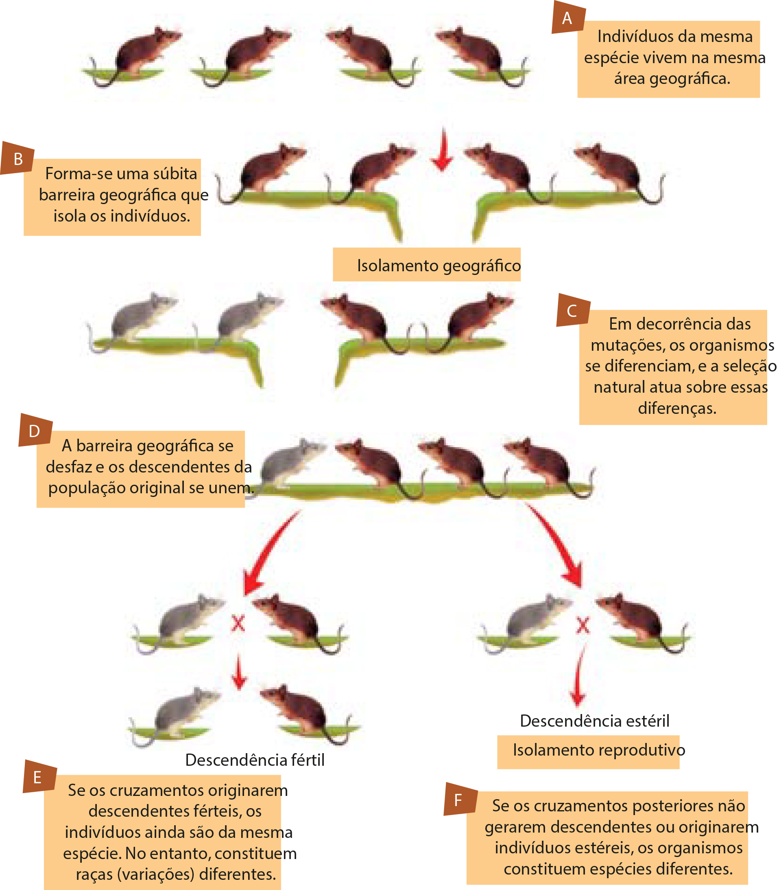
Dagoberto Pereira. 2013. Digital.
Representação esquemática do processo de especiação alopátrica
Especiação simpátrica
Na especiação simpátrica (do grego syn, juntamente; e do latim patria, pátria), as populações não estão geograficamente isoladas. Nesse caso, ocorre a divergência genética de populações (de uma espécie ancestral
única) que vivem em uma mesma região geográfica, formando espécies diferentes. Isso pode ocorrer por:
mutações cromossômicas durante as divisões celulares (principalmente na meiose), as quais, no decorrer de gerações, podem levar à formação de novas espécies;
favorecimento de indivíduos com características extremas em virtude de mudanças ambientais, podendo, em gerações, levar ao isolamento reprodutivo, formando uma nova espécie;
deriva genética quando um desastre ecológico, como inundação ou incêndio, elimina grande parte da população. Assim, os indivíduos que resistiram (por estarem em um ponto não afetado, por exemplo, e não por suas características)
aumentam a frequência de determinadas características por meio da reprodução. Em virtude dessa redução na variabilidade genética, uma nova espécie pode se desenvolver com o passar das gerações.
Mecanismos de isolamento reprodutivo
Os mecanismos que impedem a reprodução entre espécies diferentes e resultam no isolamento reprodutivo podem ser pré-zigóticos e pós-zigóticos.
Os que acontecem antes do acasalamento, evitando a fecundação, denominam-se pré-zigóticos e podem ocorrer por:
isolamento ecológico – as populações envolvidas habitam lugares distintos e, assim, não mantêm contato durante seus períodos reprodutivos, estando isoladas reprodutivamente pela localização;
isolamento sazonal – a época de reprodução (maturação de gametas) das espécies que tentam se acasalar é diferente. Com isso, machos e fêmeas não estão prontos para a cópula no mesmo período. Esse isolamento também
se aplica às plantas. Embora algumas espécies de orquídeas habitem a mesma região, o florescimento ocorre em épocas diferentes, impedindo o cruzamento entre elas;
isolamento comportamental ou etológico − machos e fêmeas de espécies diferentes apresentam comportamentos, sons e cheiros distintos, como as danças nupciais e o canto das aves, o coaxar dos sapos e a
bioluminescência dos vaga-lumes e das águas-vivas;
isolamento anatômico ou mecânico – nos animais, há diferenças no tamanho e na forma dos órgãos genitais de machos e fêmeas, tornando-os incompatíveis para a cópula. Nas plantas, o estigma das flores pode se tornar
incompatível à recepção dos grãos de pólen;
isolamento gamético − mesmo que a cópula aconteça, os gametas masculinos podem não ser atraídos pelos gametas femininos. Além disso, podem não apresentar as enzimas necessárias para romper os envoltórios do gameta
feminino, tornando-se incompatíveis.
Em alguns casos, mesmo se o cruzamento entre dois seres vivos de espécies diferentes ocorrer e a fecundação for viável, verificam-se os mecanismos pós-zigóticos, que são:
inviabilidade do híbrido − os zigotos híbridos apresentam viabilidade reduzida ou são inviáveis, isto é, a prole híbrida pode não sobreviver ou sobreviver com dificuldades. Por exemplo, embora algumas espécies de rãs habitem a
mesma lagoa e possam eventualmente cruzar-se, pode haver uma geração de híbridos interespecíficos, mas que não se desenvolvem. Além disso, em muitos mamíferos, o embrião pode ser abortado naturalmente pela fêmea;
esterilidade do híbrido – mesmo que indivíduos híbridos sejam vigorosos, eles podem não produzir gametas normais, pois a estrutura ou o número de cromossomos das espécies parentais impossibilita um pareamento adequado durante a
meiose. Um exemplo é o cruzamento do jumento (Equus asinus) com a égua (Equus caballus), que resulta em um híbrido estéril (burro ou mula). Por não serem capazes de produzir prole quando acasalam entre si ou com
uma das espécies parentais, o intercâmbio genético ou fluxo gênico entre as espécies é bloqueado.
Atividades
(ACAFE – SC) Os principais fatores evolutivos que afetam o equilíbrio gênico de uma população mendeliana são: a mutação, a seleção natural, a migração e a deriva gênica.
Os fatores que contribuem para o aumento da variabilidade genética de uma população são:
a) mutação e migração.
b) migração e deriva genética.
c) deriva genética e seleção natural.
d) seleção natural e mutação.
(UFRN) A cauda do pavão, os chifres dos alces e as penas coloridas dos machos das aves-do-paraíso são “acessórios” estratégicos para o ciclo de vida dessas espécies e representam uma evidência da evolução biológica. As
características apresentadas por esses animais favorecem a ocorrência do processo evolutivo por seleção
a) sexual.
b) artificial.
c) direcional.
d) disruptiva.
(CESUPA)
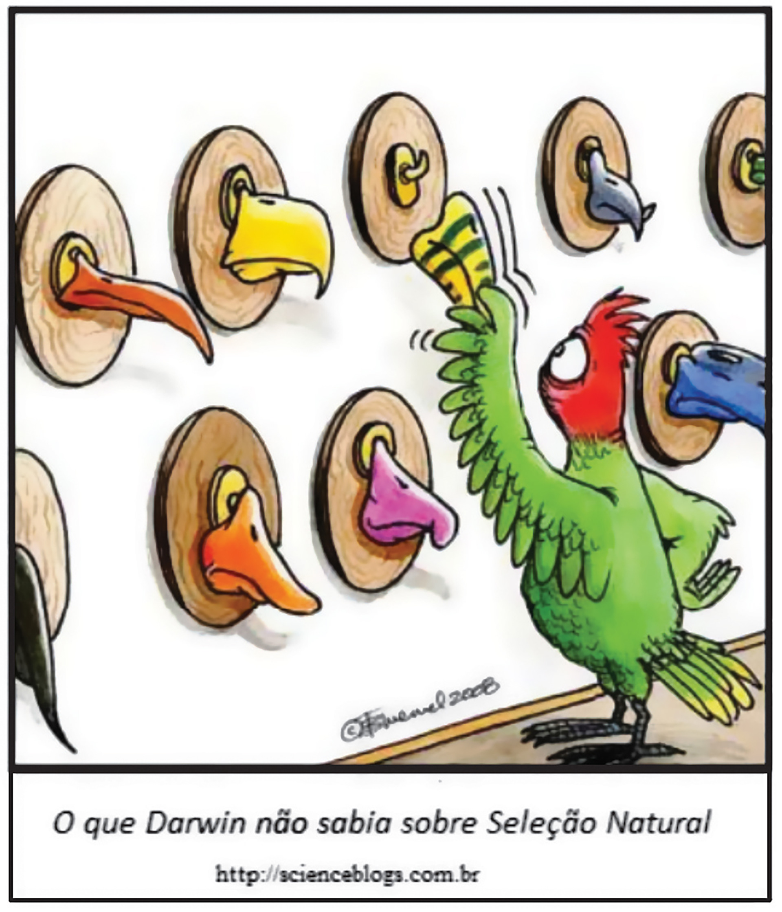
Ao propor a Teoria da Evolução das Espécies pela Seleção Natural, Darwin baseou-se em dois princípios para explicar a mudança evolutiva.
Assinale a alternativa que apresenta estes princípios.
a) As espécies mostram variação entre os indivíduos. O processo responsável por essa variação constitui a adaptação das espécies.
b) As espécies não são imutáveis. O processo responsável por essa modificação constitui a evolução das espécies.
c) As espécies evoluem a partir de características adquiridas em resposta ao ambiente. O processo responsável por essa evolução constitui a seleção natural.
d) As espécies mudam ao longo do tempo. O processo responsável por essa mudança constitui a seleção natural.
(UNICENTRO – PR) A seleção natural pode atuar sobre os caracteres quantitativos de forma a produzir diferentes tipos de respostas evolutivas. Um resultado possível pode ser assim exemplificado: se um grupo de pássaros tivesse
apenas dois tipos de alimentos (sementes duras e larvas xilófagas, escondidas na madeira em decomposição), seriam favorecidos aqueles com bico fino e delicado, que teriam mais facilidades em capturar as larvas, e os de bico mais
forte, capazes de quebrar as sementes; pássaros de bico intermediário levariam desvantagem por não serem hábeis na obtenção de nenhum dos dois tipos de alimento. Esta situação poderia ser representada pelo gráfico a seguir.
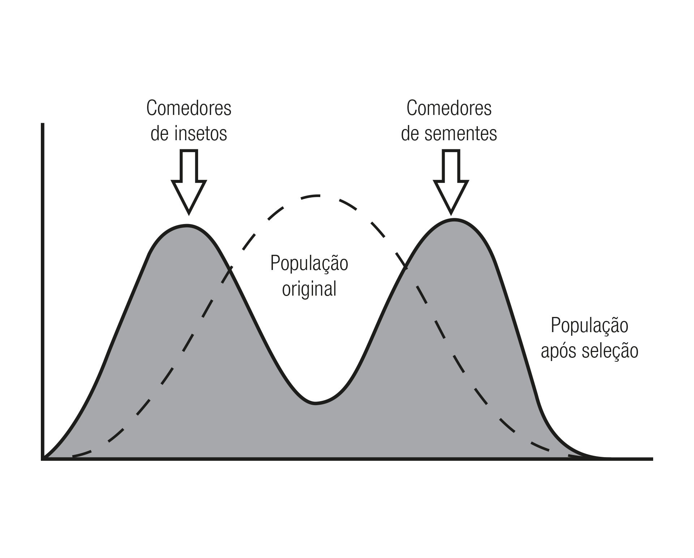
(Adaptado de: <http://entendendoovelhodarwin.blogspot.com.br/2010/09/selecao-disruptiva-ou-diversificadora.html>. Acesso em: 3 out. 2013.)
Assinale a alternativa que apresenta, corretamente, a seleção que é descrita no exemplo e representada pelo gráfico.
a) Estabilizadora.
b) De espécie.
c) Dicopátrica.
d) Direcional.
e) Disruptiva.
(UEG – GO) Na Biologia, o processo de seleção pode envolver não apenas a aptidão de obter alimento ou escapar de predadores, mas envolve também critérios de seleção sexual. Sobre esse tema, responda ao que se pede.
a) O que é seleção sexual?
b) Exemplifique um modelo de seleção sexual.
Os seres humanos deixaram de ser caçadores e coletores para se dedicarem à criação de animais e ao cultivo de espécies de plantas para a alimentação. A seleção artificial de sementes possibilitou que espécies selvagens sofressem
modificações, originando as que conhecemos atualmente. Um exemplo é a mostarda-silvestre, por meio da qual se obteve o cultivo de brócolis, couve-flor, repolho, entre outras plantas.
a) Considerando a seleção artificial, explique como ocorre o desenvolvimento de tantas variedades de plantas a partir de uma única espécie.
b) Cite uma desvantagem da seleção artificial.
Evidências do processo evolutivo
A análise criteriosa de evidências evolutivas encontradas até o momento sugere que os seres vivos existentes na atualidade descendem de outros indivíduos que habitaram a Terra no passado.
Por meio de análises comparativas entre os seres vivos, os cientistas procuram evidências e argumentos científicos da ocorrência de modificações nas espécies. Os métodos utilizados para demonstrar a ocorrência do processo evolutivo são
baseados em evidências paleontológicas, anatômicas, embriológicas e moleculares.
Evidências paleontológicas
A Paleontologia (do grego palaios, antigo; ontos, ser; logos, estudo) é a ciência que estuda os restos e os vestígios de seres vivos que viveram no passado, denominados fósseis.
O processo de fossilização é raro (poucos organismos fossilizam) e, geralmente, apenas as partes duras fossilizam, como troncos, conchas, carapaças, ossos e dentes. Contudo, em algumas situações excepcionais, grande parte do organismo
pode estar conservada. Nesses casos, os seres ficam envolvidos em materiais que os preservam do contato com micro-organismos decompositores. Isso acontece, por exemplo, com insetos fossilizados na resina de árvores (âmbar) ou em
sedimentos finos, mamutes preservados na neve, entre outros.
Os fósseis contêm muitas informações sobre a evolução das espécies. Assim, relacionando dados sobre as mudanças geológicas com as evidências do registro fóssil, podem-se verificar alguns detalhes de como a vida se modificou ao longo da
história da Terra.
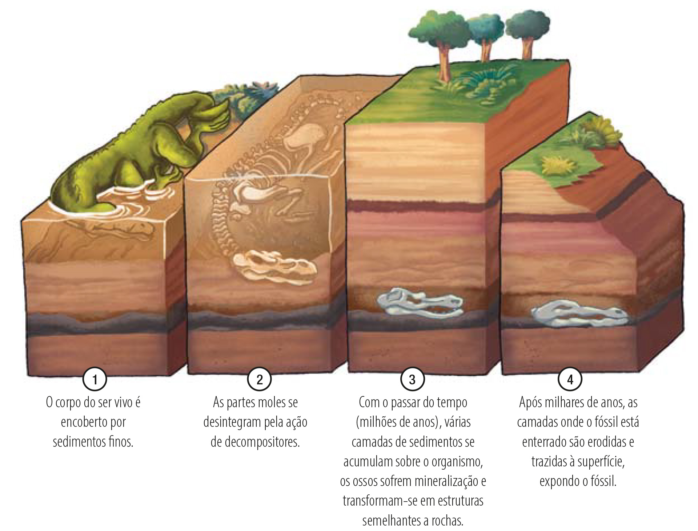
José Luis Juhas. 2013. Digital.
Esquema ilustrativo do processo de fossilização
Mundo do trabalho
Paleontologia
O paleontólogo é o profissional que estuda, por meio dos fósseis, as espécies que já existiram no planeta. Os fósseis são muito importantes para o estudo da morfologia dos seres antigos e da geologia da Terra, desvendando problemas
biológicos relativos a evolução, origem e extinção da vida e ajudando na datação de rochas e no estudo sobre as mudanças climáticas e o movimento dos continentes.
No Brasil, não existem cursos de graduação na área de Paleontologia. Dessa forma, profissionais de áreas próximas, como Geografia, Geologia e Biologia, podem realizar estudos de pós-graduação envolvendo temas da Paleontologia, como
microfósseis e fósseis de dinossauros e outros vertebrados.
Evidências anatômicas
Os estudos da anatomia comparada de seres vivos possibilitam investigar as semelhanças entre suas estruturas, e a correspondência entre elas ajuda a determinar a ancestralidade comum e o maior ou menor grau de parentesco evolutivo. As
evidências anatômicas incluem o estudo de órgãos homólogos, análogos e vestigiais.
Os órgãos homólogos compreendem regiões corporais de diferentes espécies que apresentam semelhanças entre si, evidenciando que evoluíram a partir de um ancestral comum. Evidências fósseis podem indicar
a existência desse ancestral, que, ao sofrer mutações e isolamentos (geográfico e reprodutivo), formou diversas linhas evolutivas, as quais deram origem às espécies. Como se assemelham no padrão anatômico, os órgãos homólogos têm a
mesma origem embrionária, podendo ou não apresentar a mesma função.
Ao comparar a anatomia dos mamíferos, por exemplo, é possível perceber que os braços dos seres humanos, as pernas dianteiras dos cavalos, as asas dos morcegos e as nadadeiras das baleias são estruturas homólogas, pois apresentam a
mesma origem embrionária. Apesar da evidente diferença entre esses órgãos, eles têm o mesmo padrão de músculos, ossos, nervos e vasos sanguíneos. As mudanças genéticas ocorridas durante o processo evolutivo desses animais possibilitaram
sua adaptação aos diferentes ambientes que habitam.
Essa diversificação de espécies a partir de um ancestral comum denomina-se irradiação adaptativa ou evolução divergente.
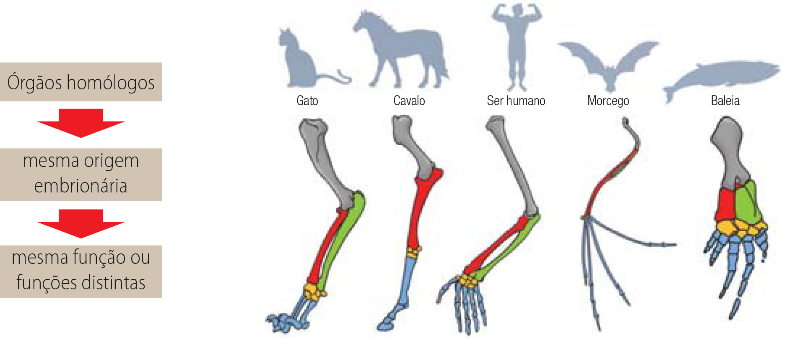
Dagoberto Pereira. 2013. Digital.
Esquema comparativo dos membros anteriores de mamíferos considerados órgãos homólogos
Os órgãos análogos apresentam a mesma função em diferentes espécies, mas não têm a mesma origem embrionária. Essas espécies evoluíram de forma independente, mas sofreram pressões seletivas semelhantes
em seus ambientes.
Um clássico exemplo de órgãos análogos são as asas de insetos e aves. Embora os dois tipos de asas estejam adaptados ao voo, ou seja, apresentem a mesma função, eles se diferenciam quanto à origem e à estrutura anatômica. As asas das
aves são órgãos locomotores que apresentam a estrutura interna semelhante às asas dos morcegos (homologia). Já as asas dos insetos são estruturas quitinosas que se originam do revestimento do tórax do animal.
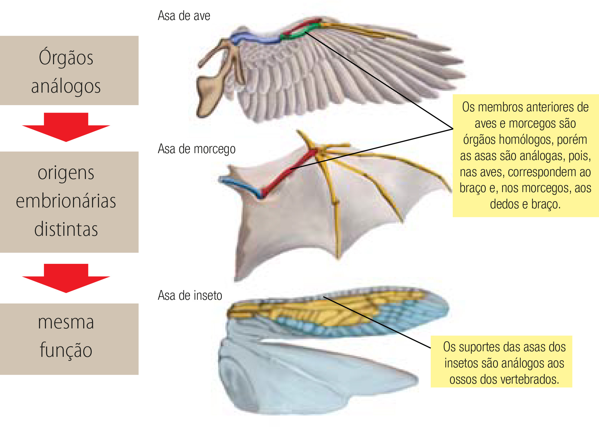
Ricardo Grube . 2013. Digital.
Representação esquemática da estrutura das asas de aves, morcegos e insetos
A analogia é comum entre espécies que não têm parentesco evolutivo próximo, mas que apresentam adaptações semelhantes. Isso evidencia a evolução convergente ou convergência adaptativa entre essas
espécies. Por exemplo, o formato hidrodinâmico do corpo do golfinho, do tubarão, do ictiossauro (réptil extinto) e do pinguim é muito parecido, apresentando as mesmas adaptações para a natação. Assim, houve uma convergência evolutiva
que aconteceu de forma casual, pois as modificações genéticas que ocorreram com o tempo possibilitaram a esses indivíduos a exploração de ambientes muito semelhantes.
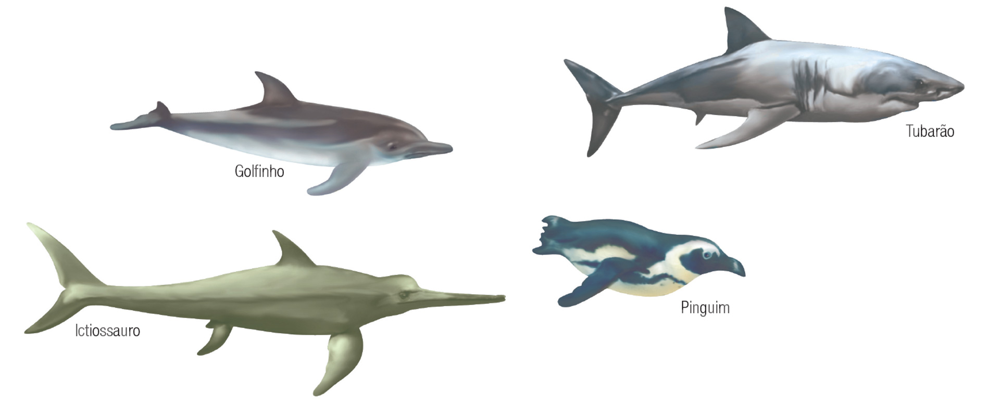
Ricardo Grube. 2013. Digital.
Representação da evolução convergente de quatro vertebrados adaptados ao ambiente aquático por apresentarem a forma hidrodinâmica do corpo
Outra evidência anatômica do processo evolutivo são os órgãos vestigiais ou rudimentares. Em algumas espécies, constituem apenas vestígios reduzidos de órgãos que existiram em seus ancestrais e, geralmente, não
executam uma função importante. No entanto, podem estar presentes em outras espécies executando função definida.
Entre os vários exemplos de órgãos vestigiais, estão as asas atrofiadas de algumas aves (ema e avestruz), o esqueleto remanescente dos membros inferiores das serpentes e dos cetáceos (baleias e golfinhos) e as folhas vestigiais de
plantas xeromorfas (cactos) e parasitas (cuscuta). Nos seres humanos, também existem algumas estruturas consideradas vestigiais, como o apêndice cecal, o terceiro par de dentes molares (dentes do siso), os músculos auriculares e o osso
cóccix.
Assim, as estruturas vestigiais constituem importantes indicações da irradiação adaptativa, ou seja, da ancestralidade comum ou parentesco evolutivo, pois não haveria razão para a formação de órgãos vestigiais se não
houvesse uma ligação evolutiva entre os diversos grupos biológicos.
Evidências embriológicas
O estudo dos embriões, denominado embriologia, pode fornecer importantes evidências sobre o processo evolutivo. Comparações realizadas entre embriões de diferentes espécies animais demonstram que esses seres podem apresentar grandes
semelhanças nas primeiras fases de seu desenvolvimento. Por exemplo, ao comparar os grupos de animais pertencentes aos cordados (craniados), como peixes, anfíbios, répteis, aves e mamíferos, é possível perceber grande semelhança em suas
fases embrionárias, sugerindo que se diversificaram há muito tempo a partir de um ancestral comum.
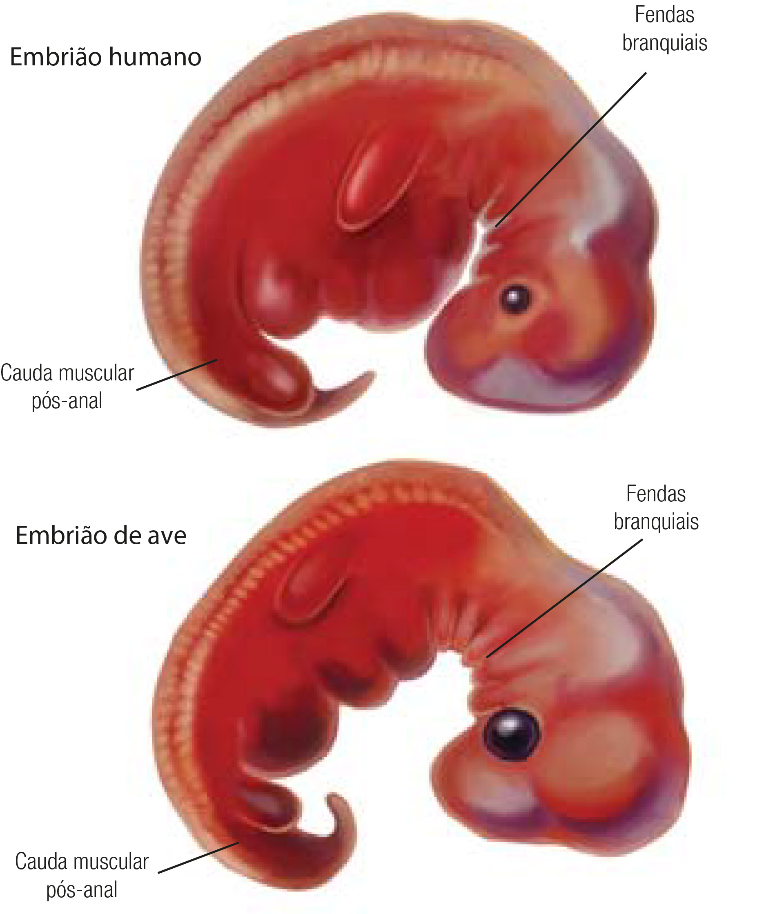
Raqsonu. 2016. Digital.
Representação esquemática de uma das primeiras fases embrionárias de um ser humano e de uma ave
Evidências moleculares
Revelam a semelhança na estrutura dos ácidos nucleicos e das proteínas entre diferentes seres vivos. No processo evolutivo, as mutações são alterações nas bases nitrogenadas dos ácidos nucleicos, resultando em trocas (ou perdas) de
aminoácidos durante a codificação de determinada proteína. Como o código genético é universal, existe a evidência de que todas as formas de vida estão evolutivamente correlacionadas. Assim, quanto maior é o grau de parentesco evolutivo
entre as espécies, maiores são as semelhanças entre a estrutura do DNA e a sequência de aminoácidos de suas proteínas.
Pode-se determinar esse sequenciamento tanto em tecidos vivos quanto em tecidos preservados presentes em múmias, fósseis, peles secas expostas em museus e folhas prensadas em herbários (mesmo que apresentem uma mínima quantidade de
DNA). Por meio das comparações moleculares dos seres vivos, é possível saber que os seres filogeneticamente mais próximos apresentam maior semelhança genética que as espécies filogeneticamente mais afastadas. Portanto, as evidências
moleculares garantem mais precisão nos estudos evolutivos e são fundamentais na construção das árvores filogenéticas.
As árvores filogenéticas são representações gráficas com informações comportamentais, moleculares e anatômicas que possibilitam estudar as relações evolutivas entre várias espécies que apresentam um ancestral comum.
Nas árvores filogenéticas, cada nó ou ponto de ramificação com descendentes representa o mais recente antepassado comum, e os comprimentos de suas ramificações revelam as estimativas do tempo decorrido no processo evolutivo.
Evolução humana
Como a estrutura do material genético e as mutações ainda eram desconhecidas em 1859, Darwin não soube responder satisfatoriamente às críticas da comunidade científica sobre sua teoria. No entanto, o que deixou a sociedade da época
mais aborrecida foi o fato de ter se espalhado a notícia de que Darwin havia dito que os seres humanos e os macacos descendem de um ancestral comum. Na verdade, sua explicação foi interpretada erroneamente, já que Darwin não afirmou que
o ser humano descende diretamente do macaco, pois esse não é o modelo proposto em sua teoria.
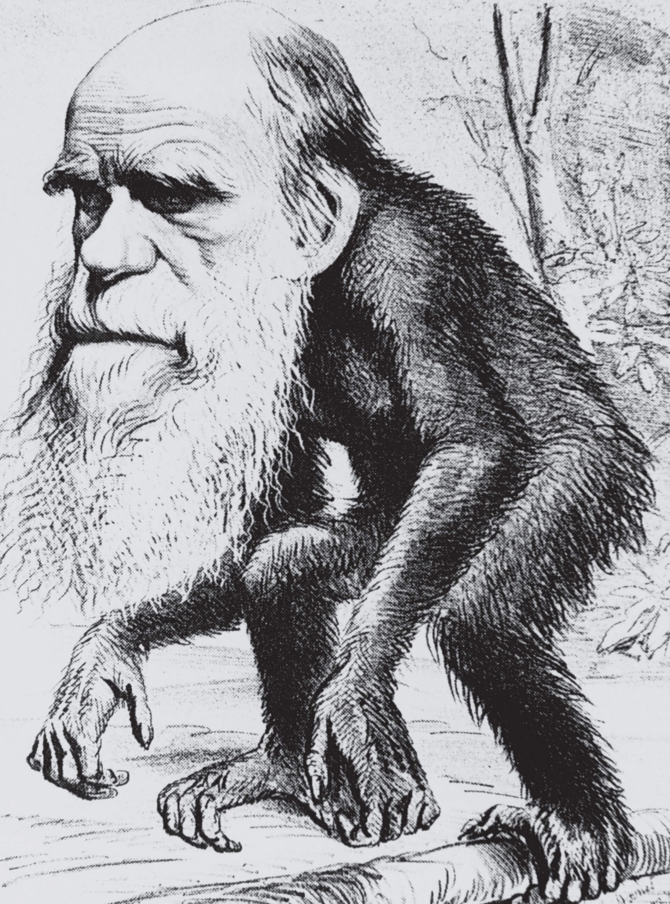
LatinStock/SPL
Caricatura criticando Darwin pelo livro A origem das espécies
Para compreender a evolução dos seres humanos, é importante ter em mente que:
a história da humanidade envolve milhões de anos. Estima-se, por exemplo, que o Homo sapiens exista há pelo menos 150 mil anos. Para nós, isso é muito tempo, entretanto, em relação aos 3,5 bilhões de anos do aparecimento
das primeiras formas de vida, trata-se de um fato recente;
os seres humanos pertencem à espécie Homo sapiens, classificada na Classe Mammalia, na ordem dos primatas, que concentra três grupos principais: lêmures, társios e antropoides;
a evolução humana não ocorreu em uma linha evolutiva reta, em que o objetivo final era o desenvolvimento do Homo sapiens. Na verdade, os seres humanos fazem parte de uma árvore evolutiva bastante
ramificada.
Evidências fósseis revelam que o surgimento da espécie humana atual (Homo sapiens sapiens) teve origem na África, há cerca de 130 mil anos. Os principais sítios arqueológicos africanos em que essas evidências foram encontradas
se localizam na África do Sul, em Malauí, na Tanzânia, no Quênia e na Etiópia.
A análise de registros fósseis sugere que o grupo dos primatas antropoides, no qual está classificado o ser humano, começou a divergir dos outros grupos de primatas há aproximadamente 50 milhões de anos, e as espécies
ancestrais que levaram ao surgimento dos seres humanos devem ter se separado do grupo dos grandes macacos – como gibões, orangotangos e gorilas – entre 5 e 7 milhões de anos atrás.
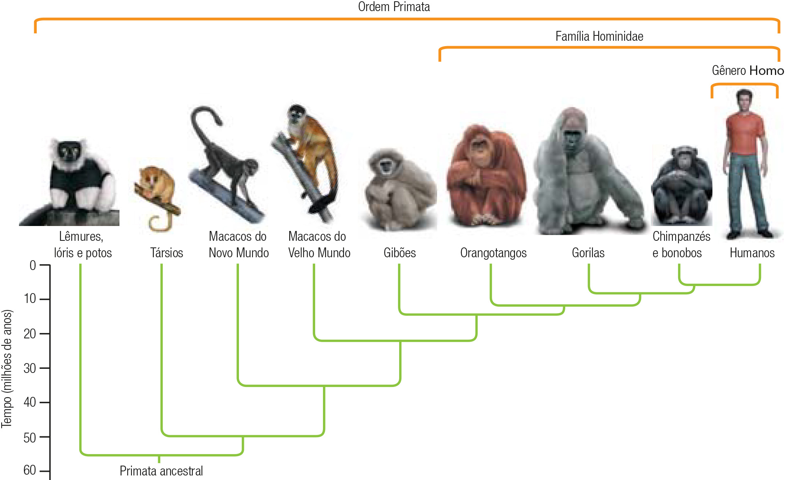
Divo. 2010. Digital.
Fonte: CAMPBELL, Neil A.; REECE, Jane B. Biologia. 8. ed. Porto Alegre: Artmed, 2010. p. 726.
Representação da árvore filogenética dos primatas
reconstituição do caminho percorrido pelos antepassados humanos é possível pela análise do DNA. A ancestralidade materna é obtida por exames do DNA mitocondrial; e a paterna, por meio de análise do cromossomo Y. Analisando as
mutações do DNA e cruzando esses dados com as respectivas localizações geográficas dos indivíduos dos quais provêm, é possível fazer uma retrospectiva do percurso da espécie humana.
O estudo das origens humanas é realizado pela Paleantropologia, e já foram encontrados registros fósseis de cerca de 20 espécies extintas mais semelhantes aos seres humanos que aos chimpanzés (parentes evolutivos
atuais mais próximos dos seres humanos). Essas espécies são chamadas de hominíneos e são extremamente importantes para a compreensão das espécies ancestrais dos seres humanos.
Hominídeo é uma classificação ampla que designa várias espécies. Por isso, na Antropologia e na Paleantropologia, prefere-se o termo hominíneo.
Atualmente, destaca-se na ordem dos primatas a família dos hominídeos (Hominidae), que inclui duas subfamílias: Homininae (gorilas, seres humanos e chimpanzés) e Ponginae (orangotangos). Entre os Homininae, há uma subdivisão
(tribo) chamada Hominini, que inclui somente os seres humanos e sua linhagem imediata. Ressalta-se que, nessa situação, o termo tribo designa um táxon entre a subfamília e o gênero, sem indicar qualquer relação com
a organização social desses indivíduos.
Os seres humanos evoluíram de espécies africanas isoladas que, como qualquer outra espécie, estiveram sujeitas aos mecanismos de seleção natural. Os fósseis mostram que ocorreram determinadas modificações na linhagem de primatas,
formando os ardipitecos (Ardipithecus ramidus).
Supõe-se que, há 4 milhões de anos, essa linhagem primata tenha originado o gênero Australopithecus. Os australopitecos, considerados os primeiros hominídeos, já apresentavam o bipedalismo, forma de locomoção em que o corpo se
mantém ereto e os movimentos acontecem pelo uso das pernas. Esse tipo de locomoção deixa as mãos livres para a manipulação de objetos e facilita o carregamento de materiais e da prole durante as caminhadas. Além disso, os olhos se
mantêm elevados, possibilitando a localização das presas e dos predadores sobre a vegetação. Essas modificações foram fundamentais para a sobrevivência e a continuidade do processo evolutivo dessas espécies.
O esqueleto fóssil mais completo de australopiteco foi encontrado na região de Hadar, na Etiópia, em 1974, e pertence à espécie Australopithecus afarensis. O fóssil era de uma jovem, que ficou conhecida como Lucy, e
apresentava cerca de 1,1 m de altura e pouco menos de 30 kg. Seu crânio tinha entre 350 e 400 cm3, equivalente a cerca de um terço do volume médio do crânio dos humanos atuais.
Esqueleto de Lucy (Australopithecus afarensis), a mais completa evidência fóssil de um hominídeo
LatinStock/Photo Researchers, Inc./Tom McHugh
Estima-se que o Australopithecus afarensis tenha originado outras espécies, que se diversificaram por vários locais da África, existindo por aproximadamente 1 milhão de anos no planeta Terra. Além do Australopithecus
afarensis, existiram as espécies Australopithecus anamensis, Australopithecus africanus, Australopithecus garhi, Australopithecus robustus, Australopithecus boisei e Australopithecus sediba (encontrada recentemente).
Atualmente, o Australopithecus robustus e o Australopithecus boisei estão classificados no gênero Paranthropus, sendo chamados também de Paranthropus robustus e
Paranthropus boisei.
Gênero Homo
As mudanças evolutivas de determinadas espécies de australopitecos, que migraram para locais com diferentes condições ambientais, originaram hominídeos que apresentavam a região pélvica e os ossos da perna mais semelhantes às
características dos humanos modernos, além de estatura maior e sistema nervoso mais desenvolvido, com crânio mais volumoso. Essa teria sido a primeira espécie do gênero Homo, denominada Homo habilis. Registros
fósseis evidenciam que esses hominídeos viveram entre 2,4 e 1,6 milhão de anos atrás e apresentavam maior aptidão para manipular objetos, comportamento comunitário organizado e capacidade de comunicação mais elaborada.
Entre as espécies mais antigas do gênero Homo identificadas, além do Homo habilis, estão o Homo ergaster, que deve ter existido entre 1,9 e 1,5 milhão de anos atrás; o Homo rudolfensis, vivendo há
aproximadamente 2 milhões de anos; e o Homo erectus, que surgiu há cerca de 1,8 milhão de anos, sendo a primeira espécie de hominídeo a migrar para fora da África.
Representação artística do Homo habilis, ancestral humano que já apresentava capacidade de manipulação e fabricação de ferramentas
Getty Images/Brown Bear/Windmil Books
O Homo erectus também apresentava estatura maior, e sua capacidade craniana era pouco maior que 1 000 cm3. O cérebro mais desenvolvido em relação aos outros hominídeos possibilitou a aquisição de diversas
habilidades, incluindo a utilização e capacidade de manipulação do fogo. Graças ao fogo, o Homo erectus pôde se aquecer e consumir alimentos que não seriam digeridos em sua forma natural, como raízes e grãos. Além disso, o fogo
eliminava a maioria de possíveis micro-organismos dos alimentos e facilitava a digestão. Com o fogo, também podiam se proteger de animais ferozes e fabricar ferramentas mais elaboradas e resistentes para a utilização na caça e na
escavação de raízes e caules. O fogo foi importante ainda para a vida social, intensificando os laços familiares e culturais entre os grupos.
Fósseis de Homo erectus encontrados na Ilha de Java, na Indonésia, e na China sugerem que esses hominídeos migraram para a Ásia por volta de 1 milhão de anos atrás e se extinguiram do planeta há menos de 200 mil anos.
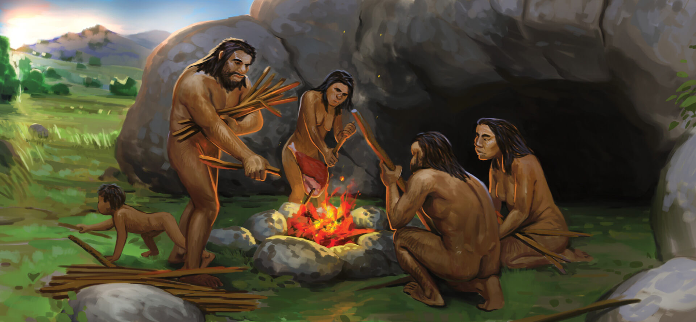
Raqsonu. 2016. Digital.
Ilustração artística de grupo social de Homo erectus utilizando o fogo
Outra espécie de hominídeo cujos fósseis foram encontrados é o Homo neanderthalensis ou homem de Neanderthal, o qual recebeu essa denominação porque o primeiro fóssil desse grupo foi encontrado no vale de
Neander, na Alemanha, em 1857. Os neandertais viveram nas áreas que, atualmente, correspondem à Europa e ao Oriente Médio há 200 mil anos, nunca saindo dessa região.
Eram hominídeos musculosos com capacidade craniana de 1 450 cm3, pouco maior que a dos humanos modernos, que é de 1 350 cm3. Enterravam seus mortos e construíam ferramentas de pedra e madeira. Existem discussões
científicas de que os neandertais que se extinguiram há, aproximadamente, 28 mil anos provavelmente desapareceram por perder a competição por território e alimento para os Homo sapiens.
O Homo sapiens sapiens, espécie humana atual, surgiu na África, há cerca de 150 mil anos. A tendência atual é considerar que esses hominídeos, conhecidos como homens de Cro-Magnon (os primeiros fósseis foram
encontrados em Cro-Magnon, na França), evoluíram da espécie Homo ergaster. Há cerca de 80 mil anos, o Homo sapiens foi migrando da África e, progressivamente, passou a se estabelecer nos continentes asiático e europeu.
Posteriormente, chegou aos outros continentes.
Considera-se que o desenvolvimento da linguagem do Homo sapiens foi fundamental para a conquista dos ambientes dos outros hominídeos com quem provavelmente coexistiu. Isso proporcionou mais versatilidade na comunicação,
possibilitando maior organização social dos bandos. Além disso, eles já acreditavam em mitos e dominavam diferentes técnicas, como as queimadas.
Analisando o panorama evolutivo de diferentes espécies do gênero Homo, pode-se identificar que, pelos períodos estimados de quando viveram e por habitarem territórios próximos, algumas espécies podem ter coexistido no mesmo
período histórico, mesmo de maneira breve. É muito difícil afirmar como eram as estruturas sociais e outros pontos culturais dessas espécies. Elas podem ter colaborado entre si para sobreviver ou participado de conflitos entre grupos de
espécies diferentes, o que pode ter levado à extinção de uma ou outra espécie de hominídeo. A única certeza que se tem é a de que alguns desses hominídeos devem ter se encontrado em algum momento da história da evolução humana; entre
eles, o Homo sapiens foi ganhando território.
A seguir, está representado um esquema dos possíveis caminhos do processo evolutivo da espécie humana.
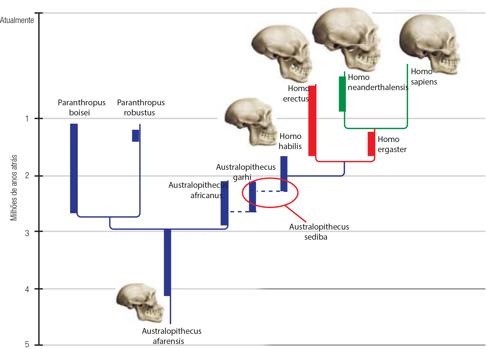
Divo. 2002. Digital.
Representação esquemática simplificada (algumas espécies foram omitidas) de árvore filogenética para o gênero Homo e possíveis ancestrais mais próximos. As linhas grossas indicam a abundância de restos fósseis, e o círculo revela
a região da árvore onde a espécie Australopithecus sediba melhor se encaixaria.
Não existem subespécies (raças) entre os seres humanos atuais, porque as diferenças genéticas entre populações das mais diversas etnias são insignificantes. Os traços fenotípicos distintos que se manifestam na espécie humana são
condicionados por um número muito reduzido de genes, que representam uma pequeníssima parte do genoma humano. Alguns desses genes, como os que determinam a pigmentação da pele, a altura e a massa dos indivíduos, estão relacionados à
herança quantitativa, ou seja, os efeitos são cumulativos, determinando diferentes intensidades fenotípicas. Por isso, não importam características como cor da pele, feições do rosto, estatura ou origem geográfica, pois
geneticamente pertencemos a uma única espécie (Homo sapiens), que apresenta apenas uma subespécie (Homo sapiens sapiens).
Atividades
Sobre as evidências evolutivas, marque V para as afirmativas verdadeiras e F para as falsas.
a) As evidências evolutivas são importantes argumentos científicos para
sustentar a Teoria da Evolução com base em análises comparativas entre os seres vivos.
b) Os fósseis contribuem apenas parcialmente como evidência evolutiva,
pois, muitas vezes, são incompletos e não auxiliam na identificação dos elos entre as espécies.
c) Os órgãos homólogos podem comprovar a existência de um ancestral comum
entre as espécies.
d) Os órgãos análogos são regiões corporais que apresentam a mesma função
em diferentes espécies, mas que não têm a mesma origem embrionária.
e) As evidências embriológicas demonstram que os embriões de mamíferos,
aves e répteis não apresentam semelhanças, tendo, assim, um ancestral comum muito distante na escala evolutiva.
(UEL – PR) Atletas utilizam seus membros anteriores para a realização de lançamentos. As figuras 13, 14 e 15 representam membros anteriores de diferentes espécies animais.
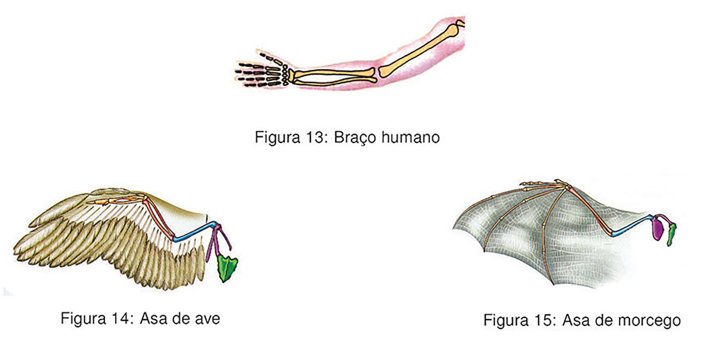
De acordo com as figuras e os conhecimentos sobre características evolutivas dos animais, considere as afirmativas a seguir.
Por terem funções distintas, os membros anteriores de humanos e de aves apresentam esqueletos com estrutura diferente.
Os membros anteriores de morcegos e de humanos são estruturas que surgiram de forma independente, com origem embrionária diferente.
As estruturas ósseas das asas de morcegos e de aves são homólogas, pois são derivadas de um ancestral comum.
No processo de adaptação para o voo, asas de aves e de morcegos evoluíram independentemente, fenômeno conhecido como evolução convergente.
Assinale a alternativa correta.
a) Somente as afirmativas I e II são corretas.
b) Somente as afirmativas II e IV são corretas.
c) Somente as afirmativas III e IV são corretas.
d) Somente as afirmativas I, II e III são corretas.
e) Somente as afirmativas I, III e IV são corretas.
(UFES) O Naturalismo teve forte influência das concepções da Teoria da Evolução. Segundo essa teoria, a morfologia e a função de uma estrutura refletem a adaptação do indivíduo ao meio ambiente. Porém, em alguns casos, apesar de
diferentes organismos possuírem determinadas estruturas com morfologias semelhantes, a origem embrionária dessas estruturas não é comum. Esse processo é chamado de
a) convergência adaptativa.
b) homologia.
c) irradiação adaptativa.
d) recombinação.
e) seleção natural.
(EMESCAM – ES) Em 1978, Donald Johanson e uma equipe de paleontólogos escavaram, na Etiópia, um espécime de hominídeo, com esqueleto quase completo, que teria pertencido a uma fêmea com 1,30 m de altura, que viveu há cerca de 3,2
milhões de anos. Esse fóssil foi batizado como Lucy em alusão à música dos Beatles “Lucy in the sky with diamonds” que os membros da equipe de paleontólogos costumavam ouvir no acampamento. O esqueleto de Lucy pertenceu ao
hominídeo
a)Australopithecus anamensis.
b)Australopithecus robustus.
c)Australopithecus boisei.
d)Australopithecus ramidus.
e)Australopithecus afarensis.
Como as teorias científicas explicam o fato de o Homo sapiens ter se desenvolvido como espécie até a atualidade e as outras espécies de hominídeos que, provavelmente, coexistiram com ele terem sido extintas?
Genética populacional
A Ilha de Queimada Grande, em São Paulo, é o único lugar do mundo onde existem indivíduos da espécie de serpente jararaca-ilhoa (Bothropoides insularis) que apresentam características hereditárias diferenciadas das serpentes
continentais do mesmo gênero. Essas diferenças foram causadas por mutações gênicas, transmitidas a várias gerações provavelmente por meio de sucessivos cruzamentos consanguíneos. Esse tipo de cruzamento aumenta a quantidade de
indivíduos homozigotos recessivos, elevando a frequência dos genes para as características deletérias. Tal fato tem causado a diminuição da variabilidade genética desses animais, que vivem isolados.
Nesse e em tantos outros casos, é possível perceber que os estudos referentes à evolução são dependentes dos conhecimentos da Genética, pois os mecanismos evolutivos estão diretamente relacionados às alterações na frequência de certos
genes que as populações apresentam. Essa interação caracteriza a área denominada Genética de Populações, que estuda a variabilidade hereditária, ou seja, as modificações nas frequências gênicas das populações e os
mecanismos que alteram essas frequências no decorrer do processo evolutivo. Por exemplo, se certo alelo determina o aparecimento de um caráter vantajoso na população, a quantidade de indivíduos portadores desse alelo tende a aumentar em
razão da seleção natural. Isso possibilita o aumento de sua frequência ao longo das gerações.
Na Genética de Populações, são estudados os fatores que possibilitam a manutenção da frequência constante dos genes e em que condições ocorrem modificações nessas frequências como resultado da atuação do processo evolutivo. Para
calculá-las e verificar como podem ser empregadas nos estudos sobre evolução, utiliza-se o Teorema de Hardy-Weinberg.
Frequência, em Genética, determina proporção. Assim, as frequências alélicas e enotípicas trabalham as proporções dos alelos e genótipos nas populações, e os fatores capazes de alterar essas
frequências ao longo das gerações buscam interpretar os fenômenos evolutivos.
Essas frequências normalmente são estimadas em um grupo de indivíduos que se cruzam aleatoriamente em uma população mendeliana. O conceito de população mendeliana está relacionado ao aspecto genético. Assim, esses
indivíduos se reproduzem sexuadamente e compartilham um patrimônio genético comum.
Princípio do equilíbrio gênico
Aproximadamente oito anos depois da redescoberta dos estudos de Mendel (1822-1884), Wilhelm Weinberg (1862-1937) e Godfrey Harold Hardy (1877-1947) chegaram, independentemente e quase simultaneamente, a conclusões semelhantes em seus
estudos. Eles perceberam que, se não existissem fatores evolutivos atuando sobre determinada população, as frequências gênicas permaneceriam inalteradas e as proporções genotípicas atingiriam um equilíbrio estável, apresentando uma
relação constante e semelhante ao longo do tempo.
Nessas populações consideradas “equilibradas”, também conhecidas como panmíticas (do grego pan, todo; mixis, mistura), o índice dos diferentes genótipos não se modifica ao
longo das gerações.
Existente apenas na teoria, panmítica é uma população suficientemente grande em que os cruzamentos acontecem ao acaso, aleatoriamente, e não existe a atuação de fatores evolutivos.
Os trabalhos desses autores resultaram no Teorema de Hardy-Weinberg, o qual estabelece que determinada população somente consegue manter seu equilíbrio genético se:
for suficientemente grande e os cruzamentos ocorrerem ao acaso (panmixia), evitando a seleção sexual;
não ocorrerem modificações significativas nas frequências alélicas;
apresentar a mesma proporção de machos e fêmeas;
todos os indivíduos apresentarem as mesmas chances de sobrevivência e forem igualmente férteis;
não apresentar fatores evolutivos, como mutação, migração, deriva genética, seleção sexual e seleção natural.
O Teorema de Hardy-Weinberg é um padrão teórico para o comportamento gênico das populações ao longo das gerações. Na prática, ele auxilia na elucidação dos mecanismos que alteram sua composição gênica, propiciando a compreensão dos
efeitos de fatores evolutivos (mutações, seleção natural, deriva genética e migrações), e na determinação da frequência genotípica em casos específicos, como em casamentos consanguíneos (aumento da homozigose).
Aplicando o Teorema de Hardy-Weinberg
Consideremos os genótipos AA, Aa e aa de uma população teórica, em que os alelos autossômicos A e a se distribuem com a mesma frequência nos
indivíduos femininos e masculinos. Assim,
AA + Aa + Aa + aa = 100%
é o mesmo que
A2 + 2Aa + a2 = 1
Se chamarmos as frequências dos alelos A e a na população de p e q, respectivamente, e verificarmos a distribuição dos genótipos em toda a população, teremos:
A (p)
a (q)
A (p)
AA p2
Aa pq
a (q)
Aa pq
aa q2
Então:
Genótipo
Frequência
AA
p2
Aa
2pq
aa
q2
Como a totalidade dos alelos da população equivale a 100%, a soma dos alelos (A + a) é igual a 1 ou 100%. Uma vez que a frequência de um homozigoto (dominante ou recessivo) é o quadrado da frequência do alelo
correspondente (A2 ou a2) e a frequência do heterozigoto é o dobro da frequência dos alelos (2Aa), tem-se a fórmula do Teorema de Hardy-Weinberg:
A2 + 2Aa + a2 = 1 ou p2 + 2pq + q2 = 1
Em que:
A ou p é a frequência do alelo dominante;
a ou q é a frequência do alelo recessivo;
A2 (AA ou pp) é a frequência de indivíduos homozigotos dominantes (AA) – probabilidade de um gameta com o gene dominante ser fecundado por outro gameta também com o gene
dominante;
2Aa ou 2pq é a frequência de indivíduos heterozigotos (Aa) – duas probabilidades de um gameta com o gene dominante (ovócito ou espermatozoide) ser fecundado por um gameta com o gene recessivo;
a2 (aa ou qq) é a frequência de indivíduos homozigotos recessivos (aa) – probabilidade de um gameta com o gene recessivo ser fecundado por outro gameta também com o gene
recessivo;
1 é a totalidade da população (100%).
Exemplo 1
Quais são as frequências alélicas e genotípicas de uma população panmítica, em que a porcentagem de indivíduos com o genótipo recessivo (aa) é igual a 9%?
Resolução
Se o genótipo recessivo (aa) é igual a 9% (frequência genotípica), calculam-se as frequências alélicas.
q2 = 9%, ou seja, q2 = 0,09
q = $$\sqrt{0,09}$$
q = 0,3 ou 30%
O resultado indica que 30% é a porcentagem de todos os alelos a (recessivos) da população. Sabendo- se que:
p + q = 1
p + 0,3 = 1
p = 1 − 0,3
p = 0,7 ou 70%
O resultado indica que 70% é a porcentagem de todos os alelos A (dominantes) da população.
Obtendo-se os dois valores das frequências alélicas, podem-se determinar os demais valores das frequências genotípicas utilizando a fórmula do Teorema de Hardy-Weinberg.
aa = q2 = (0,3)2 = 0,09 ou 9%
AA = p2 = (0,7)2 = 0,49 ou 49%
Aa = 2pq = 2 · 0,3 · 0,7 = 0,42 ou 42%
AA + 2Aa + aa = 1
49% + 42% + 9% = 100%
Exemplo 2
Nos seres humanos, o sistema sanguíneo Rh é determinado por uma herança dominante contendo dois alelos, R e r. Indivíduos Rh positivo podem ser RR ou Rr, e indivíduos rr apresentam Rh negativo.
Considerando uma população em equilíbrio em que a frequência do alelo R é de 0,6, calcule a porcentagem esperada de indivíduos:
homozigotos dominantes;
heterozigotos;
homozigotos recessivos.
Resolução
Nessa população, 60% (0,6) dos indivíduos apresentam o alelo R. Sabendo-se que:
p + q = 1
0,6 + q = 1
q = 1 − 0,6
q = 0,4 ou 40%
Assim, a frequência do alelo r é igual a 40%.
Como r2 = 0,16, existem 16% de indivíduos recessivos com Rh negativo. Utilizando o Teorema de Hardy-Weinberg, tem-se a seguinte frequência dos genótipos:
A2 + 2Aa + a2 = 1
0,36 (AA) + 0,48 (Aa) + 0,16 (aa)
A
p = 0,6
a
q = 0,4
A
p = 0,6
AA
p2 = 0,36
Aa
pq = 0,24
a
q = 0,4
Aa
pq = 0,24
aa
q2 = 0,16
Genótipo homozigoto dominante: 0,36 (36%)
Genótipo heterozigoto: 0,48 (48%)
Genótipo homozigoto recessivo: 0,16 (16%)
Assim, de acordo com o equilíbrio gênico, as frequências gênicas são mantidas constantes, determinando o equilíbrio populacional na ausência de fatores evolutivos. No entanto, sempre ocorrem fatores evolutivos nas populações reais.
Além disso, nem todas são infinitamente grandes, os cruzamentos não ocorrem ao acaso e deve-se considerar que a maioria das populações não está isolada. Todos esses fatores evolutivos alteram o equilíbrio das populações, modificando as
frequências gênicas.
O que torna o Teorema de Hardy-Weinberg importante é que ele permite saber se existe algum fator evolutivo atuando na população. Além disso, ele possibilita determinar quanto e como esse fator está afetando o equilíbrio da população.
Atividades
(UFRR) Segundo o Teorema de Hardy-Weinberg ou do equilíbrio gênico, sob determinadas condições, a frequência dos alelos de um gene em uma dada população permanece constante. Qual alternativa é condição necessária para que a
população atinja o equilíbrio de Hardy-Weinberg?
a) População muito pequena.
b) População onde ocorre migração.
c) População onde há a atuação de fatores evolutivos.
d) População que sofre mutações.
e) População onde os cruzamentos ocorrem ao acaso.
Em uma população em equilíbrio de Hardy-Weinberg, o que se pode esperar em relação à frequência genotípica?
(UFSC) Em uma população hipotética em equilíbrio de Hardy-Weinberg, um gene possui dois alelos. Sabe-se que a frequência do alelo recessivo é de 0,4. Calcule o percentual esperado de indivíduos heterozigotos nesta população [...].
(UFPE) O princípio de Hardy-Weinberg tem sido utilizado pelos evolucionistas como uma importante ferramenta para compreender as frequências gênicas nas populações dos seres vivos. Sobre esse assunto, considere as afirmativas a
seguir.
(0-0) A quantidade de indivíduos ou o isolamento reprodutivo de uma parte da população não interferem no equilíbrio gênico.
(1-1) Em uma população sob influência de processos evolutivos, tais como migração e deriva gênica, as frequências de alelos nos descendentes permanecem inalteradas.
(2-2) Como são fenômenos raros, as mutações não provocam alteração nas frequências de alelos de uma população com inúmeros tipos de cruzamentos possíveis.
(3-3) Na hipótese de prevalecerem na população cruzamentos entre indivíduos com características fenotípicas vantajosas, a mesma tende a permanecer em equilíbrio gênico.
(4-4) Supondo que as frequências dos alelos “A” e “a”, não ligados ao sexo, numa população em equilíbrio gênico, sejam, respectivamente, “0,7” e “0,3”, a probabilidade de se formar na população indivíduos “AA” é de 49%.
(IFTO) Suponha-se que no Lago de Palmas-TO, pesquisadores identificaram na população de determinada planta aquática a seguinte composição genética:
Genótipos
N.º de indivíduos
BB
3 600
Bb
6 000
bb
2 400
Total
12 000
Com base na lei de Hardy-Weinberg e nos seus conhecimentos sobre genética mendeliana marque a proposição correta.
a) Ao longo das gerações, as frequências dos alelos B e b (55% e 45%) e dos genótipos BB, Bb e bb (0,30, 0,50 e 0,20) da população em estudo devem se alterar para que ocorra evolução.
b) Se a frequência de um desses genes aumentar, pode-se inferir que tal população está em equilíbrio.
c) O aporte de esgoto nesse ecossistema pode provocar a morte de muitos organismos. Diante disto, a composição genética dessa população se altera e o potencial ambiental aumenta.
d) Na gametogênese dessas plantas, houve permutação dos genes B e b, indo apenas alguns deles para cada gameta, para então, através da reprodução, surgirem os genótipos BB, Bb e bb.
e) Os indivíduos bb têm menos chance de sobreviver e se reproduzir do que os Bb, devido à sua recessividade e consequente dificuldade de adaptação ao ambiente.
Biologia em fo
Nova espécie do gênero humano é descoberta na África do Sul
[...]
A criatura foi encontrada na caverna conhecida como Rising Star (estrela ascendente), 50 km a nordeste de Johanesburgo, onde foram exumados os ossos de 15 hominídeos. O primata foi batizado de Homo naledi. [...]
Em 2013 e 2014, os cientistas encontraram mais de 1 550 ossos que pertenceram a, pelo menos, 15 indivíduos, incluindo bebês, adultos jovens e pessoas mais velhas. Todos apresentavam uma morfologia homogênea e pertenciam a uma “nova
espécie do gênero humano que era desconhecida até então”.
[...]
“Alguns aspectos do Homo naledi, como suas mãos, seus punhos e seus pés, estão muito próximos aos do homem moderno. Ao mesmo tempo, seu pequeno cérebro e a forma da parte superior de seu corpo são mais próximos aos de um
grupo pré-humano chamado Australopithecus”, disse Chris Stringer, pesquisador do Museu de História Natural de Londres [...].
A descoberta pode permitir uma compreensão melhor sobre a transição, há milhões de anos, entre o australopiteco primitivo e o primata do gênero Homo, nosso ancestral direto.
Se for muito antiga, com mais de 3 milhões de anos, a espécie teria convivido com os australopitecos, anteriores ao gênero Homo. Se for mais recente, com menos de 1 milhão de anos, é possível que tenha coexistido com os
neandertais – primos mais próximos do Homo sapiens – ou até mesmo com humanos modernos.
[...]
NOVA espécie do gênero humano é descoberta na África do Sul. Disponível em: <http://g1.globo.com/ciencia-e-saude/noticia/2015/09/antiga-especie-do-genero-humano-e-descoberta-na-africa-do-sul.html>. Acesso em: 19 set. 2015.
Discuta com os colegas a relação da divulgação de um estudo como o apresentado no texto com a compreensão científica a respeito da evolução das espécies e de sua constante construção. Quais são as evidências evolutivas apresentadas
nesse estudo?